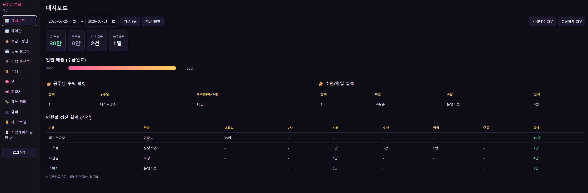
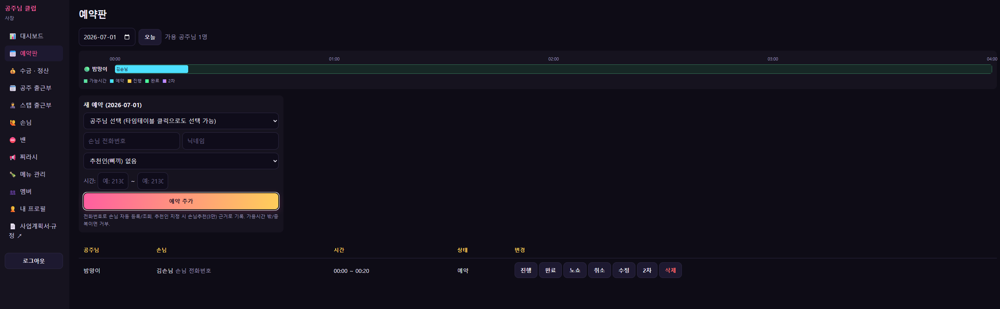
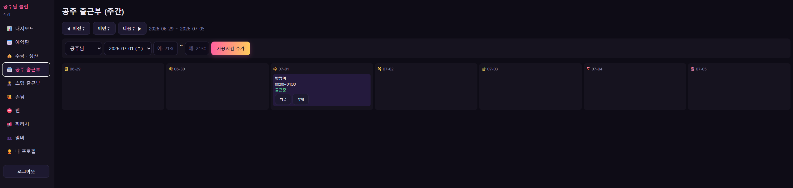
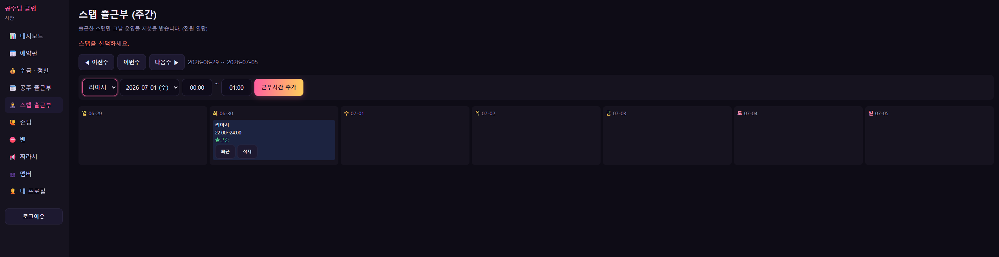
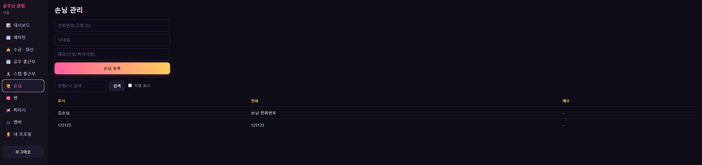
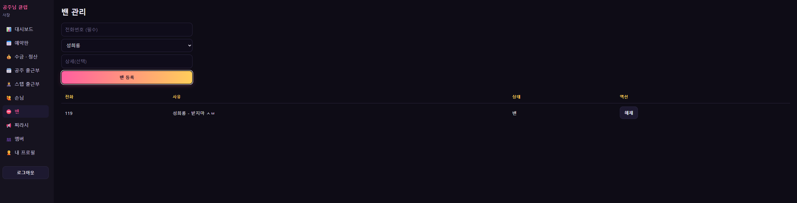
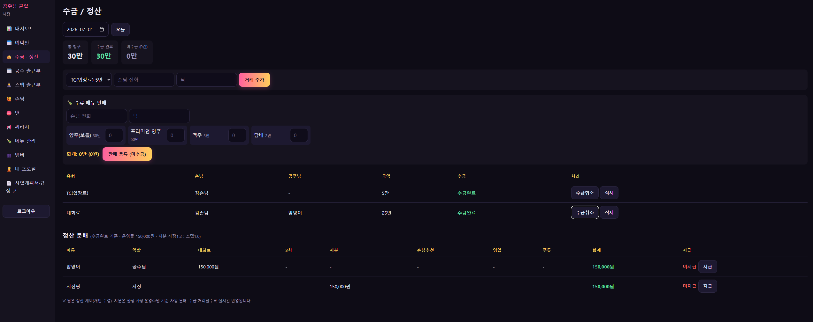
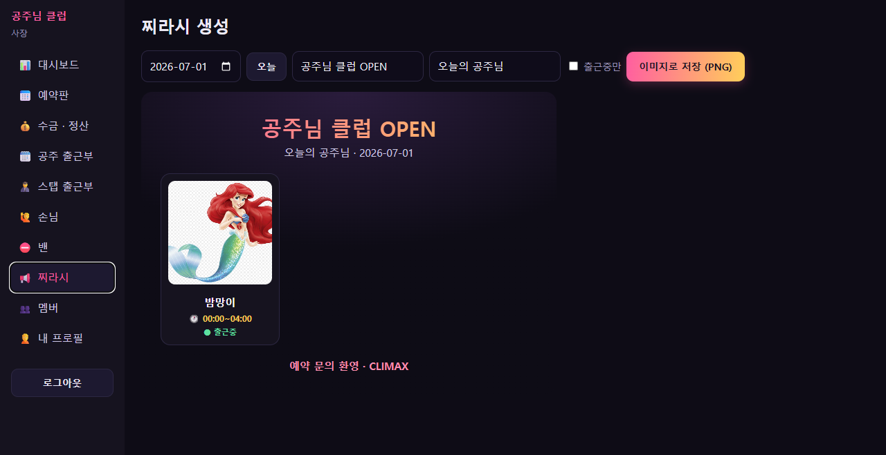

공주님 클럽 직원 매뉴얼
0. 시작하기
가장 먼저 운영앱에 가입하고 로그인합니다. 우리 가게의 예약·출근·정산·홍보가 전부 이 앱 하나로 돌아가니, 익숙해지는 게 첫걸음입니다.
- 앱 접속 — https://gta5-rho.vercel.app 에 들어갑니다. 폰·PC 어디서든 됩니다.
- 회원가입 — "회원가입" 탭에서 사장이 DM으로 보내준 직업별 가입코드를 넣고, 이메일·비밀번호·이름·전화번호를 입력합니다. 코드에 따라 역할(공주님/운영스탭/삐끼)이 자동으로 정해집니다.
- 공주님이라면 — 가입할 때 "추천인(나를 데려온 사람) 전화/닉"도 함께 입력해 주세요. 그래야 데려온 사람에게 영입 보상이 정상 지급됩니다.
- 로그인 후 — 사장에게 "가입했어요"라고 알려 주세요. 그래야 바로 운영에 합류시켜 드립니다.
1. 공통 가이드 (모두 필독)
우리가 하는 일
공주님 클럽은 여성 유저(공주님)와의 대화·접대를 컨텐츠로 제공하는 토킹바입니다. 손님은 입장료를 내고, 공주님과 20분 단위로 대화를 즐기며, 원하면 외부 데이트(2차)나 주류를 추가로 즐깁니다. 모든 것은 서버 규칙 안에서 이루어지는 합법 RP입니다.
돈이 도는 구조 — 왜 "다 같이 버는" 곳인가
우리 가게의 핵심 철학은 "공주님이 늘수록, 손님이 늘수록 모두가 부자가 된다"입니다. 그래서 사장이 혼자 많이 가져가지 않고, 일한 사람들이 나눠 갖는 구조로 설계되어 있습니다. 즉 사람을 데려오는 행위 자체가 곧 내 수익이 됩니다.
| 항목 | 가격 | 분배 |
|---|---|---|
| TC(입장료) | 5만 | 전액 운영풀(공동 수익) |
| 대화료 | 25만 / 20분 | 공주 15만 / 운영풀 10만 |
| 2차(외부 데이트) | 100만 / 시간 | 공주 70만 / 운영풀 30만 |
| 팁 | 자유 | 받은 사람이 100% 개인 소유 (+@) |
| 주류·담배 | 메뉴별 | 마진(판매가−도매가)을 출근 전원이 N빵 |
운영풀이란 TC·대화료의 가게 몫·2차의 가게 몫이 모이는 공동 주머니입니다. 이 운영풀을 그날 일한 사람들의 지분대로 나눕니다(총괄 시진핑 1.2 : 그 외 전원 1.0). 공주님은 대화료를 직접 가져가므로 운영풀 지분에는 들어가지 않지만, 그만큼 본인 몫이 확실히 보장됩니다.
🎁 공주 영입 인센티브 (전 직원 공통)
이건 삐끼만의 보상이 아니라 모든 직원에게 열린 공통 인센티브입니다. 직업이 공주님이든 운영스탭이든, 내가 새 공주님을 데려오면 그 공주님이 일하는 동안 타임당 1만이 계속 내 몫으로 들어옵니다. 한 명만 잘 영입해도 그가 일하는 내내 수입이 쌓이는, 우리 가게에서 가장 강력한 부수입입니다.
- 받는 사람: 직업 무관 전 직원 누구나.
- 조건: 그 공주님이 가입(또는 멤버 등록)할 때 추천인이 "나"로 매핑되어 있어야 합니다. 공주님 가입 시 "추천인 전화/닉"에 나를 넣게 하거나, 사장이 멤버 등록 시 추천인을 지정합니다.
- 지급: 그 공주님의 대화료 타임마다 1만씩(운영풀에서 차감), 일하는 내내 지속.
출근과 정산의 대원칙
- 그날 번 것은 그날 나눕니다. 영업이 끝나면 운영풀을 지분대로 정산해 지급합니다.
- 출근(체크인)해야 정산을 받습니다. 출근부에 가용시간을 등록만 한 "예정" 상태로는 정산·예약 대상이 되지 않습니다. 꼭 영업일에 출근 버튼을 눌러야 합니다. (허위 출근은 기록으로 추적됩니다.)
- 팁을 제외한 모든 매출은 앱에 기록 → ATM 입금 → 중간정산 때 사장에게 넘깁니다. 본인 돈과 섞이지 않게, 자세한 현금 흐름은 아래 「1.5 현금·정산 수칙」을 꼭 지켜주세요. (분쟁 방지 장치)
예의와 합법성 (모두에게 적용)
우리는 서버 규칙을 어기는 곳이 아니라 앞장서서 지키는 곳입니다. 20세 이상만 이용하며, 성희롱·욕설·패드립·혐오 표현은 손님이든 직원이든 무관용으로 대응합니다. 서버 내 갈등은 RP 안에서 풀고, 마무리 후 F3 고객지원으로 처리하며, 외부(디스코드 등)로 분쟁을 끌고 가지 않습니다.
1.5 현금·정산 수칙 (스탭 필독)
TC·대화료·주류·2차… 돈 받는 모든 거래를 그때그때 앱에 입력하세요. 정신없어도 딱 3초 기다려서 꼭! 기록하세요. 🙏
기록 안 된 거래는 정산에서 빠지고, 나중엔 아무도 기억 못 합니다. 꼭!!!
우리 가게 현금은 아래 순서로 돕니다. 순서대로만 하면 본인 돈과 매출이 절대 안 섞입니다.
- 출근하면 소지금 전부 ATM 입금. 매출과 본인 돈이 섞이지 않게 먼저 비웁니다.
- 도매자금 10만원 수령. 사장(시진핑) 또는 부사장(박두팔)에게 재고 구매용 10만원을 받습니다. (정산 때 반납할 돈)
- 서비스 제공. TC 5만원은 입장 즉시 받고, 기본으로 맥주 2병(종류별 1병씩)을 제공합니다.
- 모든 서비스는 앱에 기록. (위 🚨 경고) 거래마다 3초만 투자해 꼭 입력합니다.
- 중간정산. 사장이 "돈 가져와" 하면 도매자금 10만원만 남기고 번 돈 전부 사장에게 넘깁니다.
- 정산받고 무조건 퇴근. 마지막에 빌려준 도매자금 10만원을 공제(반납)하고 마무리합니다.
※ 주류는 각자 도매가로 사입해서 팝니다. 판매가−도매가(마진)만 그날 출근한 사람끼리 N빵으로 나눕니다. 도매값은 위 10만원 정산으로 사장에게 돌아갑니다.
2. 직업별 가이드
제목을 누르면 펼쳐집니다. 본인 직업을 먼저 정독하세요.
공주님 공주님 가이드
내가 버는 방식
공주님은 가게의 심장이고, 그만큼 가장 후하게 가져갑니다. 수익은 크게 네 갈래입니다.
- 대화료 15만 / 20분 타임. 4시간 풀로 일하면 대화료만 약 180만입니다. 인원수가 늘어도 본인 몫은 줄지 않습니다 — 내 타임은 온전히 내 것입니다.
- 팁은 전액 본인 소유(+@). 앱 장부에 기록하지 않고 직접 받아 보관합니다. 매너가 좋고 인기가 많으면 기본 대화료보다 팁이 더 클 수도 있습니다. 상한이 없습니다.
- 2차(외부 데이트) 70만 / 건. 100% 본인 선택이며 거부권이 보장됩니다. 부담 갖지 말고, 원할 때만 하면 됩니다.
- 주류 마진 N빵. 출근한 날 가게에서 술이 팔리면 그 마진을 출근 전원이 함께 나눕니다. 손님에게 "술 한잔 사주세요"라고 자연스럽게 권하면 매출도, 내 몫도 늘어납니다.
- 공주 영입 1만 / 타임. 다른 공주님을 데려와도 전 직원 공통 인센티브로 받습니다(1번 공통 가이드 참고).
업무 흐름 (이 순서대로)
- 프로필 사진 등록. [내 프로필]에서 사진을 올립니다. 이 사진이 홍보물(찌라시)에 들어가 손님을 끌어옵니다.
- 가용시간 미리 등록. [공주 출근부]에서 내가 일할 수 있는 시간(예: 21:00~24:00)을 미리 등록합니다. 본인 것만 등록·수정할 수 있습니다. 일주일치 미리 잡아두면 예약이 그만큼 일찍 들어옵니다.
- 영업일에 출근 버튼. 실제로 일하는 날 [출근] 버튼을 눌러야 그 시간부터 예약을 받습니다. 안 누르면 손님이 나를 예약할 수 없습니다.
- 접대. 손님과 1:1로 20분 타임을 진행합니다. 손님을 기분 좋게 해서 단골로 만드는 것이 곧 팁이고 재방문입니다.
- 2차는 웨이터를 통해서만. 손님이 2차를 원하면 직접 정하지 말고 웨이터에게 넘깁니다. 웨이터가 일정·동의를 확인해 안전하게 잡아 줍니다.
- 퇴근 버튼. 일이 끝나면 퇴근 처리합니다.
운영스탭 운영스탭 가이드 (가드·웨이터 겸직)
내가 버는 방식
운영스탭은 가게가 돌아가게 만드는 사람입니다. 한 명이 가드 역할과 웨이터 역할을 교대로 맡아 지루하지 않게 일합니다.
- 운영풀 지분 1.0(출근한 날). 그날 매출(TC·대화료 가게몫·2차 가게몫)을 사장 1.2 : 스탭 각 1.0으로 나눠 가집니다. 손님이 많은 날일수록 내 몫도 커집니다.
- 팁. 웨이터 턴에 손님이 주는 팁은 본인 소유입니다.
- 주류 마진 N빵. 출근한 날 술 매출 마진을 함께 나눕니다.
- 공주 영입 1만 / 타임. 공주님을 데려오면 전 직원 공통 인센티브로 받습니다(1번 공통 가이드 참고).
웨이터 턴 업무
- 예약 관리. [예약판]에서 손님 예약을 잡고, 미루고, 수정합니다. 출근한 공주님만 예약 대상으로 뜨니, 가용시간과 충돌을 보며 배정합니다.
- 입장 처리. 손님이 오면 입장료(TC)를 받고 음료를 제공하며, 손님을 앱에 등록합니다(전화번호가 손님의 고정 ID입니다).
- 타임 진행. 대화가 시작되면 [진행]을 누릅니다. 그 순간 TC와 대화료가 자동으로 거래(미수금)로 잡힙니다. 선불 원칙이라 진행 시점에 받습니다.
- 2차 접수(웨이터 단독). 공주님 동의와 일정을 확인하고 2차를 등록합니다. 2차 시간만큼 그 공주님 자리가 비므로, 겹치는 예약은 앱 안내대로 미루거나 조정합니다.
- 주류·메뉴 판매. [수금/정산]의 판매 폼에서 손님과 메뉴 수량을 넣으면 합계가 자동 계산됩니다. 선불로 받고 등록합니다.
- 현금 인계. 받은 돈은 사장에게 인계합니다.
가드 턴 업무
- 분위기·출입 관리. 손님 응대와 가게 분위기를 지킵니다.
- 무관용 단속. 성희롱·진상·시간초과·무전취식은 즉시 대응 → 출입거부(밴) 등록 + 증거 확보 + 사장/경찰(F3) 신고.
- 선은 지킨다. 손님을 죽이거나 폭행하면 우리가 범죄자가 됩니다. RP 경고 → 출입거부 → 증거 → 신고 순서로, 서버법 안에서 대응합니다.
삐끼 삐끼 가이드 (성과제 · 한도 없음)
내가 버는 방식
삐끼는 일당이나 지분이 없는 대신, 손님을 데려온 만큼 무한대로 버는 순수 성과제입니다. 능력이 곧 수입입니다.
- 손님 추천 3만 / 명. 내가 데려온 손님이 가게를 이용하면 한 명당 3만이 내 몫이 됩니다. 한도가 없어, 많이 데려올수록 그대로 수입이 됩니다.
업무 흐름
- 손님 끌어오기. 핫스팟·길거리에서 손님을 가게로 유치합니다. 이게 삐끼의 본업입니다.
- "OO(내 이름) 초대로 왔다"고 꼭 말하게 하기. 손님이 입장할 때 본인(삐끼) 이름을 대도록 안내하세요. 그래야 그 손님이 내 추천으로 잡힙니다.
- 삐끼 리스트에 등록. 데려온 손님은 삐끼 명단(추천 기록)에 입력해 두면 나중에 정산에 등록됩니다. 기록이 없으면 보상도 없습니다.
- 실적 확인. [대시보드]의 추천/영입 실적에서 내 성과를 봅니다.
3. 운영앱 사용법 (화면별)
아래 점선 박스 자리에 각 화면 캡쳐를 넣으세요.
📊 대시보드
로그인하면 처음 보이는 화면입니다. 기간을 골라 총 매출·미수금, 일별 매출 추이, 공주님 수익 랭킹과 추천/영입 실적, 인원별 정산 합계를 한눈에 봅니다. 운영 상태를 파악하는 출발점입니다.

📅 예약판
날짜를 고르면 그날 출근한 공주님들의 가능시간이 타임테이블로 보입니다. 공주님·손님·시간을 넣어 예약하고, 진행/완료/노쇼/취소로 상태를 바꿉니다. 노쇼·취소한 예약의 거래는 정산에서 "취소됨"으로 빠집니다. (예약 삭제는 사장만)

🗓️ 출근부 (공주·스탭)
주간 캘린더입니다. 본인의 가용시간을 등록하고, 영업일에 출근/퇴근/재출근을 누릅니다. 본인 것만 수정할 수 있고, 사장만 전체를 관리합니다.


🙋 손님 / ⛔ 밴
손님을 등록·검색·수정(닉/메모)하고, 익명 표시도 켤 수 있습니다. 문제 손님은 사유를 골라 밴 등록하며, 밴된 번호는 예약·거래가 자동으로 차단됩니다.


💰 수금 / 정산
거래(TC·대화료·2차)와 주류·메뉴 판매를 등록하면 미수금으로 잡히고, 사장이 수금 처리하면 정산 분배가 자동 계산됩니다. 인원별 지급/미지급 상태도 표시됩니다. 화면은 전원이 볼 수 있고, 수금·지급 버튼은 사장만 사용합니다.

📢 찌라시
날짜를 고르면 출근한 공주님들의 사진·이름·가능시간을 모아 홍보 이미지(PNG)로 만들어 줍니다. 디스코드에 그대로 올려 손님을 모읍니다.

🙍 내 프로필
본인 사진을 등록·변경합니다. 이 사진이 찌라시에 사용됩니다.
4. 필수 규칙
- 20세 이상만. 성희롱·욕설·패드립·혐오는 무관용 → 즉시 출입거부·신고.
- 게임 내 RP·게임 내 화폐만. 현금 거래가 아닙니다.
- 출근 안 하면 정산 못 받습니다. 출근 버튼은 꼭.
- 팁만 개인, 나머지 현금은 전부 사장 집결 → 장부 → 당일 지분 정산.
- 분쟁은 RP 안에서, F3로. 외부로 끌고 가지 않습니다.
본 매뉴얼은 내부 직원용이며 운영하며 계속 업데이트됩니다.